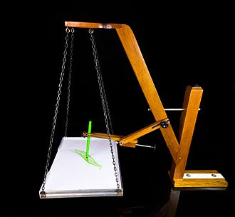
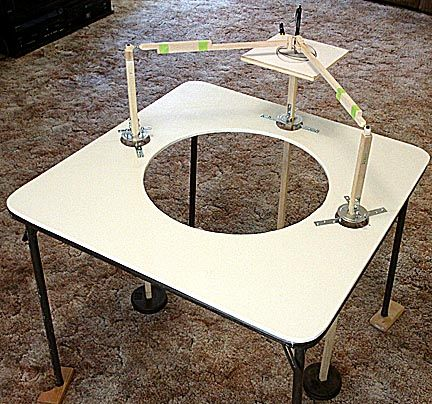
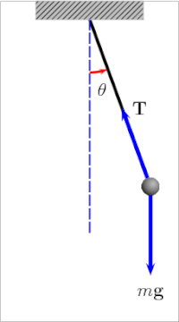
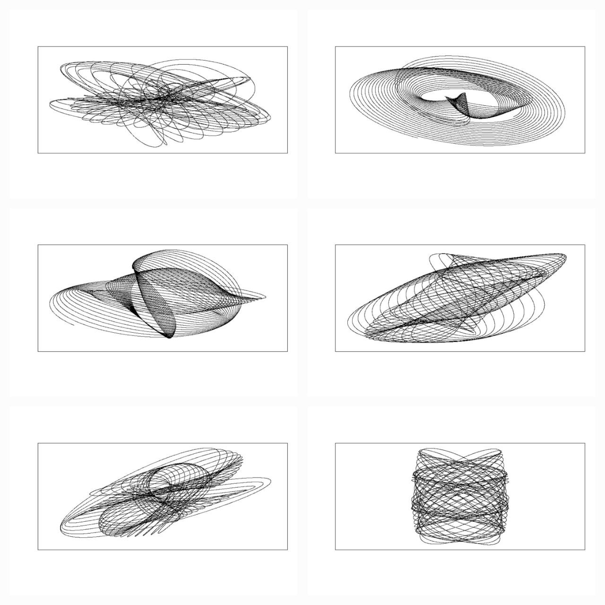
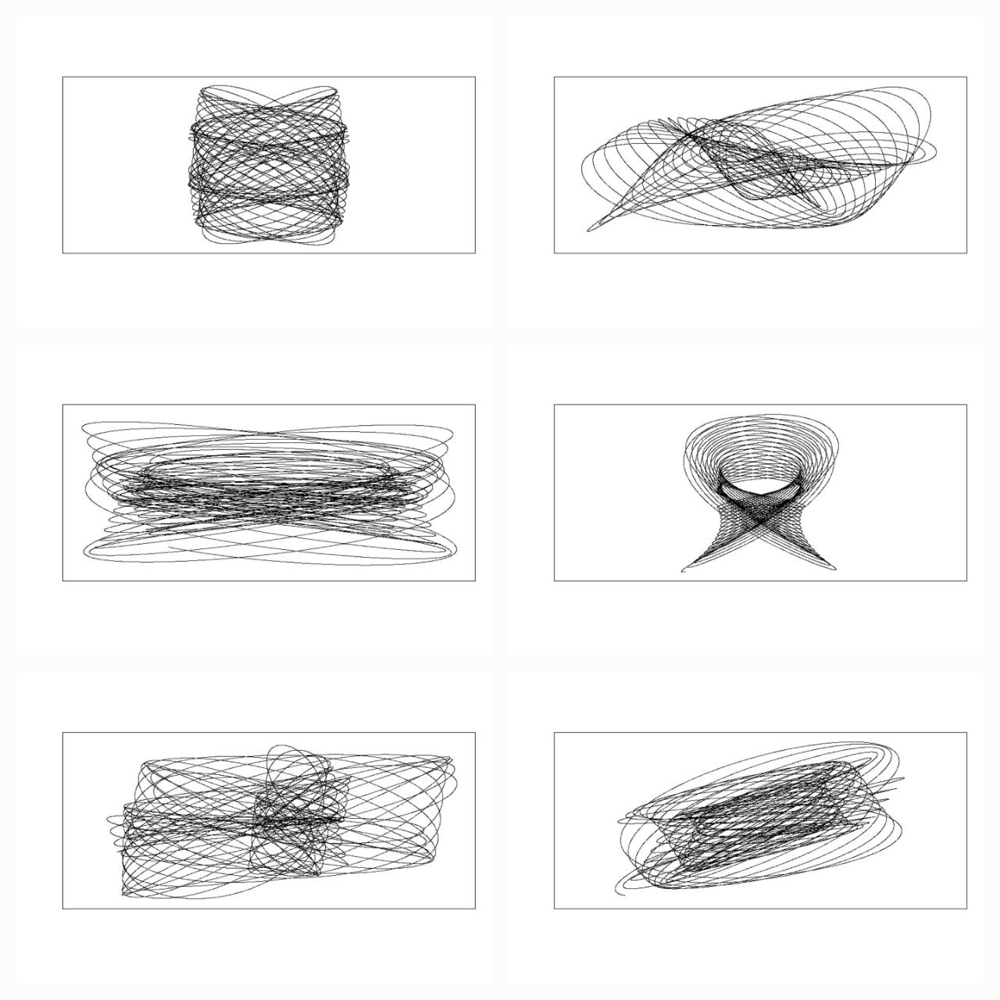
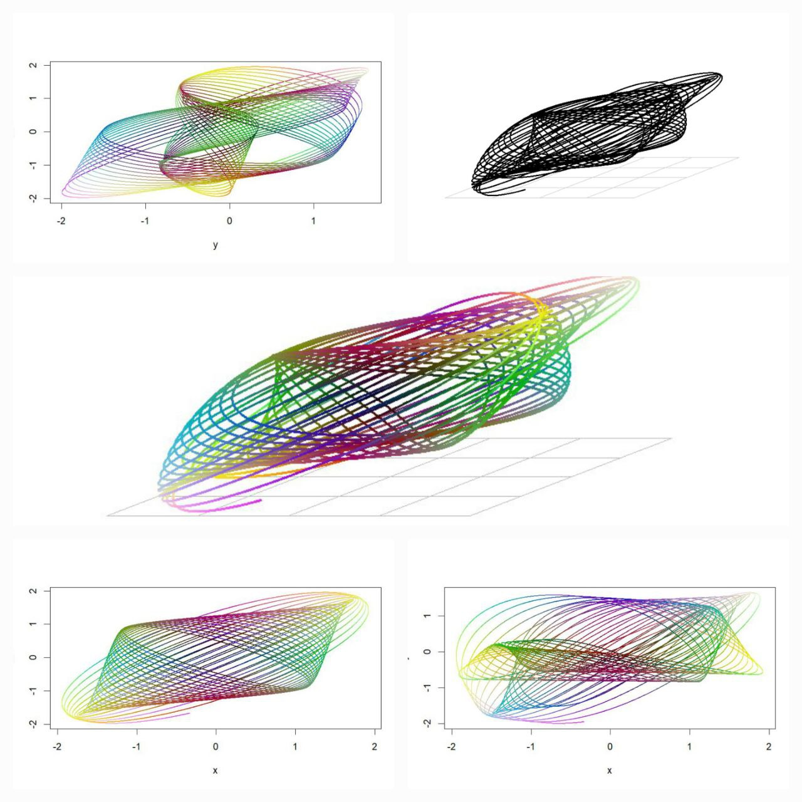
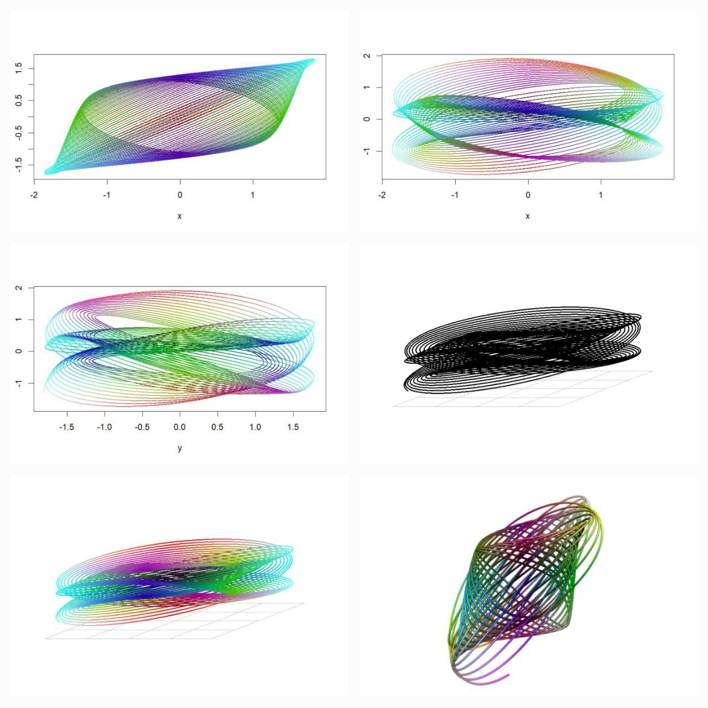
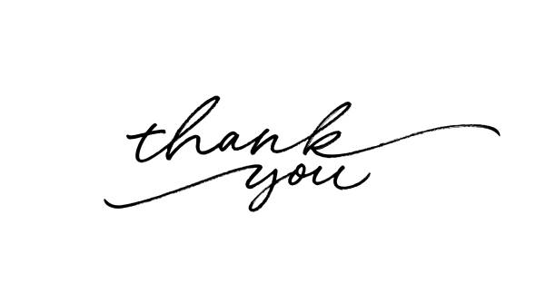

Within the rhythmic swings of pendulums lies the hidden language of harmony, where mathematics whispers to the soul through the artistry of motion.
Echoes of Harmony
In the realm where science and art intersect, there exists a gadget that captures the imagination and stirs the soul—a device known as the harmonograph. Imagine a scene reminiscent of a Victorian parlour, where guests gather around an intriguing apparatus, eagerly awaiting the unveiling of its mysterious creations.


The harmonograph, born in the 19th century, is a mechanical marvel designed to produce intricate and mesmerising drawings through the harmonious movement of pendulums. Picture two pendulums swinging in perfect synchronisation, their motions orchestrated to create harmonious patterns on paper below. It’s as if the very essence of music is translated into visual form, each stroke a note in a silent symphony.
The Enchanting World of the Harmonograph
Let us delve deeper into the story behind this enchanting invention. Legend has it that the harmonograph’s origins can be traced back to the curious minds of mathematicians and artists alike, seeking to explore the connections between mathematics, physics, and aesthetics. Among them stands the figure of Scottish mathematician Hugh Blackburn, credited with popularizing the device in the mid-19th century.
As the tale goes, Blackburn’s harmonograph captured the imagination of the public, becoming a centrepiece of Victorian parlours and scientific salons. Guests would marvel at the intricate patterns produced by the swinging pendulums, each creation a unique expression of mathematical harmony.
But what exactly makes the harmonograph tick?
At its core are the principles of harmonic motion and resonance, concepts deeply rooted in the laws of physics. By harnessing the natural oscillations of pendulums, the harmonograph transforms motion into art, unveiling the hidden beauty of mathematical patterns.

Imagine the scene, a dimly lit room, the air heavy with anticipation as the harmonograph comes to life. With each swing of the pendulum, delicate lines emerge on the paper below, forming elaborate spirals, loops, and curves. It’s a dance of precision and grace, where the laws of nature meet the creative impulses of the human spirit. But the story of the harmonograph does not end in the past. Even today, this captivating device continues to inspire artists, scientists, and enthusiasts around the world. In an age dominated by digital technologies, the harmonograph reminds us of the timeless allure of analogue craftsmanship and the beauty of simplicity. As we bid farewell to our journey through the world of the harmonograph, let us carry with us the memory of its mesmerizing creations—a testament to the enduring marriage of art and science, where imagination knows no bounds.
From Pendulum Swings to Digital Brushstrokes
Here, we present a series of computer-simulated images inspired by the harmonograph’s elegant movements. Each image is a testament to the power of technology to capture the essence of natural phenomena and to explore the boundless possibilities of artistic expression.


As we behold these digital creations, we are drawn into a world where the boundaries between art and science blur, where the precision of mathematical algorithms intertwines with the boundless creativity of human imagination. In these simulated images, we witness the culmination of centuries of exploration, where the harmonograph’s timeless allure finds new expression in the realm of pixels and code.


Each stroke, each curve, is a testament to the harmonious interplay between mathematics and aesthetics—a delicate dance of form and function that transcends the limitations of time and space. In these intricate patterns, we find echoes of the harmonograph’s elegant movements, reminding us of the beauty that lies at the intersection of calculation and creativity.
Conclusion
In the end, the harmonograph invites us to embrace the wonders of the universe, to explore the mysteries of motion and form, and to celebrate the beauty that surrounds us in every moment. So, the next time you find yourself captivated by the dance of a pendulum or the elegance of a mathematical equation, remember the harmonograph and the enchanting tale it tells—a story of harmony, resonance, and the boundless creativity of the human spirit.
Further Readings
References
Turner, Steven (February 1997). “Demonstrating Harmony: Some of the Many Devices Used To Produce Lissajous Curves Before the Oscilloscope”. Rittenhouse. 11 (42): 41.
Baker, Gregory L.; Blackburn, James A. (2005). The Pendulum: a case study in physics. Oxford. ISBN 978-0-19-156530-4.
External Links
